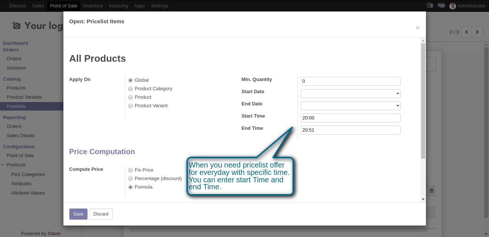
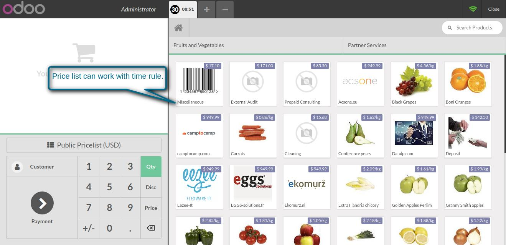

Pos Time Based Pricelist
Allows you to create pricelist based on time
Features
- Sellers can easily give time based offers in Point of sale.
- For example if the seller want to sell Ice cream with 20% discount after 5 Pm to 10 PM he can do easily.
1. Enter the start time and end time in pricelist.

2. Time base pricelist will easily applied in POS.

If You Need Any Help Please Contact
Email Id: erpmstra@gmail.com